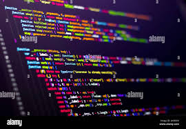

Sobre mim
Olá! Meu nome é Enzo e atualmente estou cursando Desenvolvimento de Sistemas no SENAI, onde aprendo a atuar nas três camadas do desenvolvimento: Front-end, Back-end e Banco de Dados.
Também curso Ciências da Computação na UNIP, expandindo meus conhecimentos técnicos e aprofundando minha compreensão sobre tecnologia e inovação.
Sou uma pessoa dedicada e curiosa, sempre em busca de aprimorar minhas habilidades e encontrar soluções criativas para desafios através da programação.
Tecnologias
Habilidades
FRONT-END
Desenvolvimento e estilização de interfaces utilizando HTML e CSS, com aplicação de JavaScript para interatividade, animações e consumo de APIs.
BACK-END
Criação e manutenção de APIs com JavaScript e Node.js, utilizando npm para gerenciamento de dependências. Experiência com integração de banco de dados e aplicação do padrão de arquitetura MVC.
BANCO DE DADOS
Modelagem e normalização de bancos de dados relacionais, com foco em eficiência e integridade dos dados, utilizando MySQL.
VERSIONAMENTO
Controle de versão de todos os projetos utilizando Git, garantindo histórico de alterações, colaboração e rastreabilidade no desenvolvimento.
Meus Projetos
FRONT-END
 Web Site - API Spotify
Web Site - API Spotify
Desenvolvi um website inspirado no Spotify, consumindo a própria API pública do Spotify, manipulando dados dos endpoints e estruturando a interface de forma organizada e funcional.
- HTML
- CSS
- Java Script
- Vs Code
- GIT
BACK-END
 API - Site de FilmesDesenvolvi uma API utilizando JavaScript e MySQL, criando e estruturando o banco de dados, e implementando operações CRUD de forma eficiente e organizada.
- Java Script
- Node.JS
- npm
- MySQL
- Vs-code
- MySQL Workbench
- GIT
Cursos e Formações
- Ensino Médio Completo - ano: 2023
- Técnico em Desenvolvimento de Sistemas - início: JAN 2025 | término: JUN 2026
- Ciências da Computação - início: JAN 2024 | término: DEZ 2027